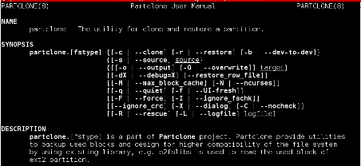

Partclone
Partclone provides utilities to smartly backup partitions. Partclone is written in C and designed for higher compatibility by using existing file system library.
Home | News | Features | Usage | Download | Help | Donation | Crdits
Welcome to Partclone Usage
partclone.[ [fstype] | restore | dd | chkimg | info ]
All partclone utilities named prefix partclone.blabla... It's just like mkfs.[fstype] or mount.[fstype] and easy to remember. The list is our man pages made from xsltproc or just run man partclone to access manual from linux system.
- partclone.[fstype]
The man page is for all utilities name with end of [xxx]fs, e.g. reiserfs. All file system share same options and features. - partclone.restore
The special man page for restore only. - partclone.dd
The special man page for partclone.dd only. - partclone.chkimg
The special man page for partclone.chkimg only. - partclone.info
The special man page for partclone.info only.